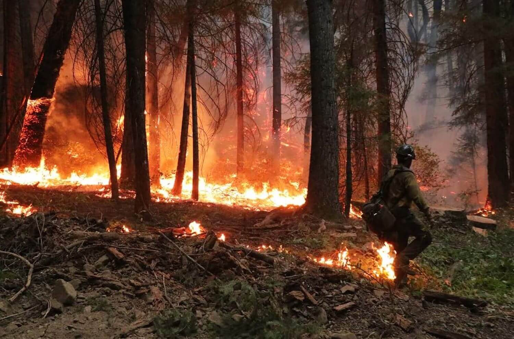
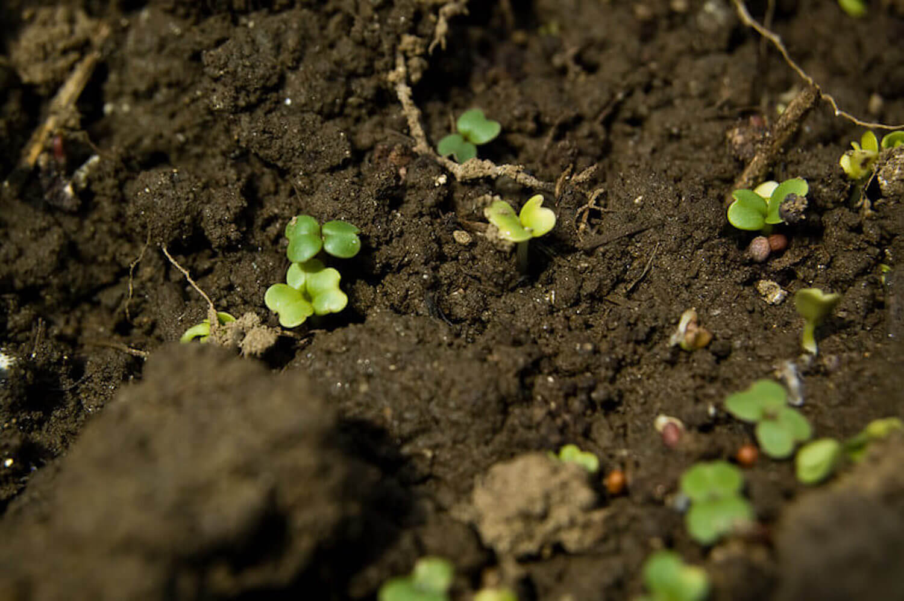
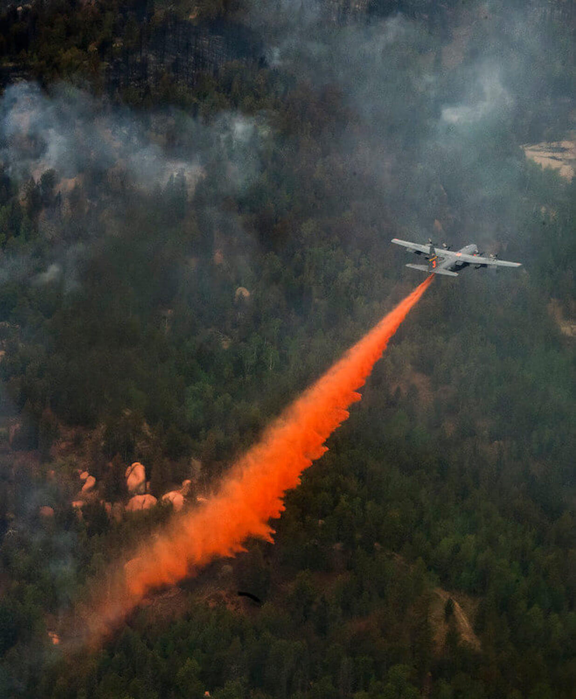

There is growing evidence that higher temperatures associated with global warming are increasing the number of summer wildfires across the Mediterranean region.
In the summer of 2021, where many of us could have hoped to catch a break from the pandemic, we instead found ourselves watching the news in shock and alarm. TVs across the world were displaying horrific images of wildfires razing the
forests of several Mediterranean coastal nations, including Turkey and Greece. What were once all-green paradises, were now turned into lifeless, dark clusters of ash.
The damage to the surrounding environment was inevitable; moreover, this devastation extended beyond the forests and into nearby towns and cities, where anxious locals were forced to evacuate their homes. Being in Turkey during this time, I
clearly remember breathing in heavy smoke that, depending on your distance from the wildfire, made your lungs burn and your throat itch.

A firefighter walking through the dangerous scene of a wildfire. | Pacific Southwest Forest Service, USDA / Flickr
Although the media has shed some light onto the subject of Mediterranean wildfires, many of us are still unaware how these hazardous events originate. How are wildfires caused? What influences their intensity and duration? Why are they so
damaging to the environment? To answer these questions, we turn to the latest scientific literature.
To put it simply, high summer temperatures, windy weather, forest dryness, land-use change, and human carelessness together create a recipe for disaster (Running, 2006). Taking the last point into account, a wildfire can easily start with
someone ignorantly throwing away their finished cigarette into a dry forested area. In fact, approximately 85% of wildfires originate from anthropogenic activities (National Geographic, 2021).
There is now a growing body of evidence highlighting that climate plays a major role in the interannual variability of wildfires, controlling fuel conditions and flammability, moisture levels and terrain characteristics (Bedia et
al., 2014). With research focusing on the effect of the Mediterranean climate on regional wildfires, it has become evident that global warming and extreme weather conditions are sparking bigger and more frequent wildfires—as if
the subsets of climate change weren’t going to be mentioned in this article (Turco, Llasat, von Hardenberg and Provenzale, 2014).
‘In fact, approximately 85% of wildfires originate from anthropogenic activities.’
One study used a Multi Linear Regression model (MLR) to analyse climate-driven variations of summer wildfires in North-Eastern Spain—a representative Mediterranean environment. The authors found that higher temperatures were positively
correlated with increases in the number of regional wildfires (ibid.).
Although extensive wildfires cause widespread losses, the boosted frequency in the number of wildfires is of great concern, as a higher quantity of small fires could produce equally as much damage—if not more—than large fires in vulnerable
environments. On average, approximately 50,000 wildfires burn 400,000 hectares (4,000km2) annually in the Mediterranean region (San-Miguel-Ayanz et al., 2013).
Destroyed terrain is often associated with soil degradation, due to the removal of vegetative cover and the increased likelihood of soil exposure to erosion agents, such as wind. Furthermore, wildfires often induce short-term, long-term, or
permanent changes in soil nutrient availability, which in turn influences soil productivity (Caon, Vallejo, Ritsema and Geissen, 2014).
Interestingly, wildfires can trigger temporary surges in soil fertility by generating a speedy release of nutrients from organic matter (i.e., dead plants and animals). However, the nutrient-full ash layer can be carried away by erosion
agents just as quickly. Immediate vegetative recovery is therefore crucial in sustaining ecosystems affected by fires, since plant growth has the potential to stabilize exposed soils.

A close look into soil fertility and plant growth. | Brian Boucheron / Flickr
Unfortunately, the harm to terrestrial ecosystems is not the only environmental problem associated with wildfires. Smoke is dangerously mixed with the products of incomplete combustion, including H2O, CO2,
methane (CH4), carbon
monoxide (CO), nitrogen oxides (NOX), nitrous oxide (N2O) and other hydrocarbons (Garcia-Hurtado et al., 2013).
‘Unfortunately, the harm to terrestrial ecosystems is not the only environmental problem associated with wildfires.’
These yields have the potential to create a positive feedback loop of climate change, in which carbon emissions trigger greenhouse gas build-ups, which in turn contributes to global warming. Worryingly, this cycle is already occurring;
since the last quarter of the 20th century, there has been a significant rise in the number of summer wildfires threatening Mediterranean countries (ibid.).
Some of these wildfires were seen blazing across the forests of Turkey this past summer. According to the European Union, the number of wildfires in Turkey in the summer of 2021 was three times that of previous summers (EC, 2021). President
Tayyip Erdogan and his government were immediately criticized for responding sluggishly and modestly.
Deputy Murat Emir, from the Republican People’s Party, stated that “The OGM [Turkey's General Directorate of Forestry] budget was planned as if there wasn't going to be any fires”, suggesting that the wildfires were predictable and
needed to be prepared for in advance (Butler, 2021). It appears that only 2% of the set forest protection budget (USD$24 million) was used to combat wildfires (OGM, 2021). Fortunately, Azerbaijan, Croatia, Spain, and Russia aided the
situation by sending numerous water planes to Turkey.

An airplane is used to combat wildfires. | The National Guard / Flickr
‘The OGM budget was planned as if there wasn't going to be any fires.’
Just across the Aegean Sea, Greece was experiencing comparable troubles. The national government acknowledged the worst heat wave since 1987, almost surrendering to the 47˚C temperatures. Perhaps the summer wildfires were a reality check
that will ultimately force the Greek government to rethink the climate crisis.
Undeniably, there is some solution-hunting to be done by all of us. The Mediterranean wildfires of 2021 proved that international cooperation is irrefutably helpful for mitigating wildfires and therefore indispensable, particularly for
emergencies. Nonetheless, it is critical that national governments explore all conceivable options to prevent and limit wildfires in the future.
Fires can be avoided by building fire safety roads, ensuring integrated forest management, developing fuel management policies, and carrying out post-fire actions in order to limit soil erosion and ash losses. Planting fire-resilient plants
in areas vulnerable to fires is also an advanced ecological technique for wildfire mitigation (Wang et al., 2021).
Of course, there is something everyone can do to prevent wildfire damage: be mindful- in every sense. Be responsive when a cigarette is thrown onto the ground. Be aware of ecosystem vulnerability. Be thoughtful of those whose lives are
affected by wildfires. Most of all, be the best influence you can be so that healthy forests can thrive worldwide.
Featured Image: Andrey | Flickr
Bedia, J., Herrera, S. and Gutiérrez, J.M., 2014. Assessing the predictability of fire occurrence and area burned across phytoclimatic regions in Spain. Natural Hazards and Earth System Sciences, 14(1), pp.53-66.
Caon, L., Vallejo, V., Ritsema, C. and Geissen, V., 2014. Effects of wildfire on soil nutrients in Mediterranean ecosystems. Earth-Science Reviews, 139, pp.47-58.
Garcia-Hurtado, E., Pey, J., Baeza, M., Carrara, A., Llovet, J., Querol, X., Alastuey, A. and Vallejo, V., 2013. Carbon emissions in Mediterranean shrubland wildfires: An experimental approach. Atmospheric Environment, 69,
pp.86-93.
Running, S., 2006. CLIMATE CHANGE: Is Global Warming Causing More, Larger Wildfires?. Science, 313(5789), pp.927-928.
San-Miguel-Ayanz, J., Moreno, J.M. and Camia, A., 2013. Analysis of large fires in European Mediterranean landscapes: lessons learned and perspectives. Forest Ecology and Management, 294, pp.11-22.
Turco, M., Llasat, M., von Hardenberg, J. and Provenzale, A., 2014. Climate change impacts on wildfires in a Mediterranean environment. Climatic Change, 125(3-4), pp.369-380.
Wang, H., Finney, M., Song, Z., Wang, Z. and Li, X., 2021. Ecological techniques for wildfire mitigation: Two distinct fuelbreak approaches and their fusion. Forest Ecology and Management, 495, p.119376.